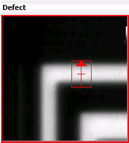
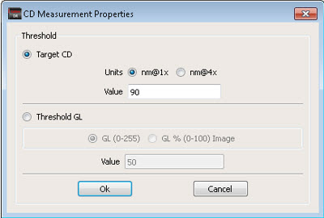
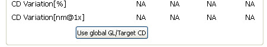

CD Measurement
works along with Cross Section Analysis in the IMU window.
Procedure
- Move the cross section bar
to the location where you want to perform CD measurement.
Figure 1. Cross Section Bar
on a Defect
- Double-click the CrossSection
window header to undock it (or click the Maximize button).
- Set the parameters for CD
Measurement using the Settings menu. Refer
to “Setting CD Measurement Properties” for details.
- Enter either the Target CD
or Threshold GL value (as shown in Figure 2) and click Ok. For further information
on Target CD and Threshold GL, see “Gray Level and Target CD Computation”.
Figure 2. CD Measurement Properties
Dialog Box
- Click Use global GL/Target CD in
the CD Measurement Results section of the GL Vs Pixel window. Click Show CD Measurement Results if
the section is not visible.
Figure 3. Use global GL/Target
CD Button
Results
The CD report is updated in the GL
Vs Pixel window. CD Measurement is performed based on the Gray Level
or Target CD value specified in the CD Measurement Properties dialog box.
Refer to “Setting CD Measurement Properties” for details.